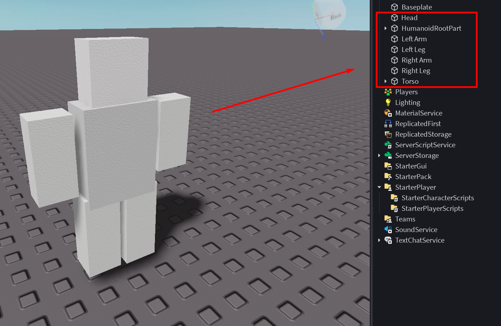
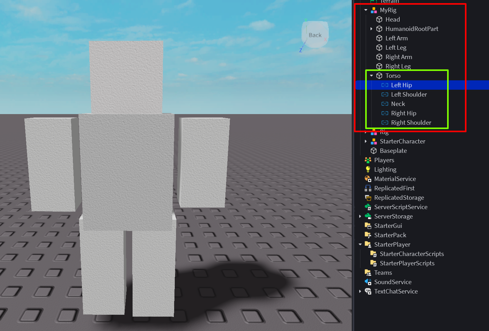
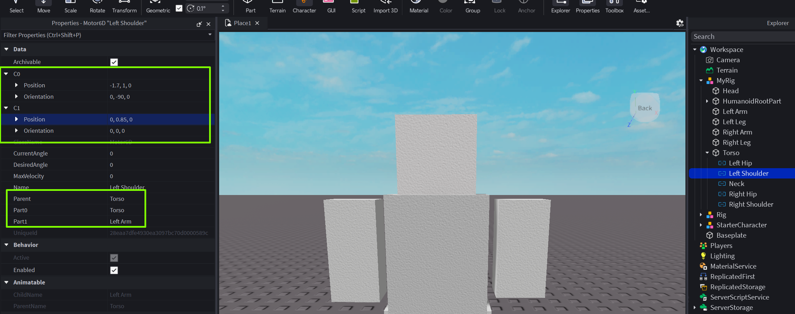
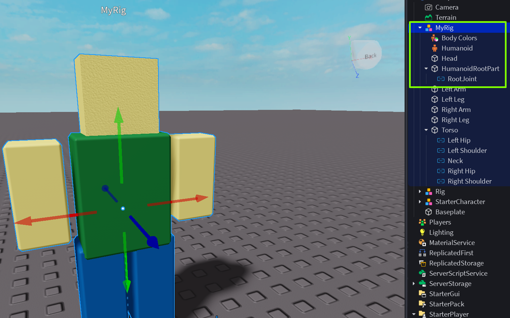
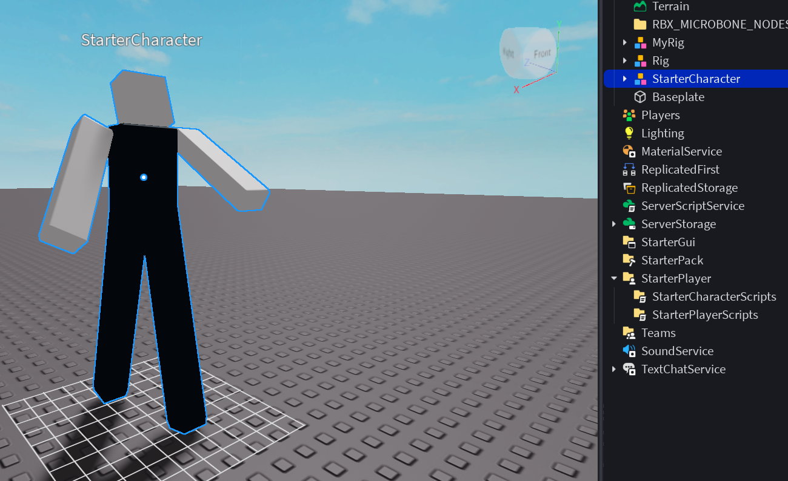

Создание игр в Roblox Studio
Создаем своего персонажа!
На сегодняшнем занятии мы научимся создавать своего персонажа с абсолютного нуля! Это значит, что мы сможем подобрать себе персонажа любой формы, цвета и вкуса!
Готовим "манекен"
Для начала нам потребуется создать несколько стандартных parts и дать каждому определенное имя (указать части тел)
Верно указываем названия - их можно подсмотреть с стандартном Rig
Настраиваем Torso
Группируем все части тела (Ctrl+G)
Внутри Torso добавляем специальные объекты - Motor6D - это тип соединения в Roblox, который соединяет две части и позволяет им вращаться и перемещаться друг относительно друга.
Именно благодаря Motor6D у нас каждая часть будет зависить от торса - главной части тела.
Каждый Motor6D переименовываем в соответствии с именами в классическом Rig.
Настраиваем Motor6D
Указываем Part0 - Torso, Part1 - та часть тела, которую привязываем.
Затем настраиваем точки склейки:
- C0 - точка склейки на Part 0 (местоположение руки на теле)
- C1 - точка склейки на Part 1 (местоположение точки, относительно которой будет двигаться наша рука - то есть плечо)
Внимательно настравиваем C0 и C1 ! Иначе руки и ноги будут двигаться максимально странно ))
Оживляем манекен
Добавляем Humanoid, Body Colors, RootJoint - тем самым превращая наш "набор из партов" в живого Rigа!
Если все части тела изменили цвет, то скорее всего мы все сделали верно и Rig определен!
Наводим красоту :)
Если переименовать MyRig в StarterCharacter и переместить его в Starter Player - то можно даже протестировать нашего чудика! :D
Также в классическом Rig можно увидеть множество привязок "Attachment" (на голове, руках, ногах) - все это нужно для применения одежды и аксессуаров. По желанию можно добавить и проверить.
Домашкаа 🤖
Выполнить задания от преподавателя